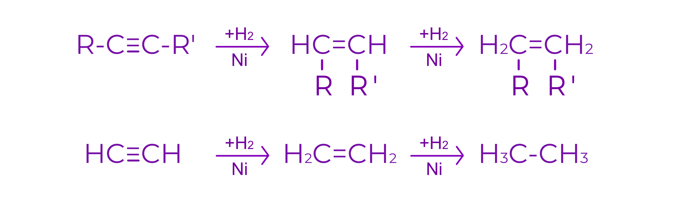
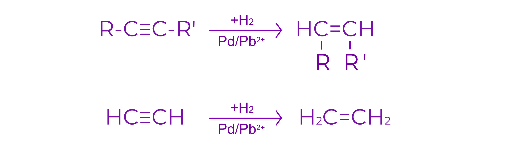
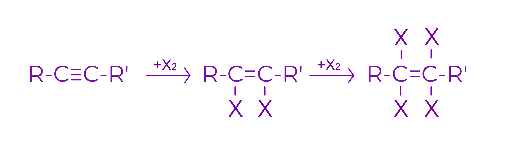

Alchine
1.Definitie:
Alchinele sunt hidrocarburi nesaturate care contin in moleculele lor o tripla legatura intre doi atomi de C
Formula generala: CnH2n-2
Nesaturarea echivalenta: N.E. = 2

2-butina

1-pentina

etina/acetilena

propina
2.Proprietati fizice:
a. Starea de agregare
C 2 - C 4 (1-butina) : gaze
C 4 (2-butina) - C 17 : lichide
> C 17 : solide
b. Punctele de fierbere si de topire
Punctele de fierbere si de topire sunt putin mai mari decat cele ale alcanilor si alchenelor cu acelasi numar de atomi de C
Punctele de fierbere si de topire cresc cu cresterea masei moleculare
c. Solubilitate
Acetilena este partial solubila in H2O (datorita polaritatii legaturii)
La 0oC : 1VH2O dizolva 1,7 VC2H2
Acetilena este solubila si in solventi organici
C2H2 nu poate fi transportata in stare lichefiata in tuburi sub presiune (explodeaza)
1Vacetona dizolva pana la 300 VC2H2 (p=12atm)
3. Proprietati chimice
Reactii de aditie
a. Aditia hidrogenului
1. Hidrogenarea totala:
Conditii: catalizator (Ni, Pd, Pt)

2. Hidrogenarea partiala:
Conditii: catalizator Pd otravit cu saruri de Pb (Pd(CH3COO)2Pb)

b. Aditia halogenilor (X = Cl, Br)
Conditii: solutii de halogeni in solventi nepolari (CCl4)
